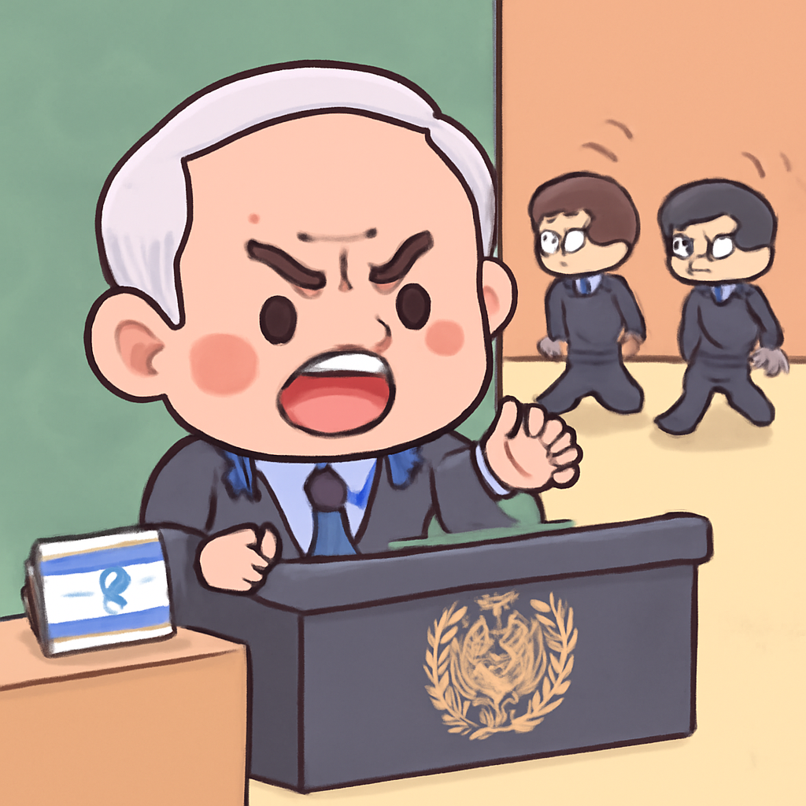

其一 · 以色列耶路撒冷 · 內塔尼亞胡在聯合國發言
以色列總理在聯合國強調軍事行動的重要性。

在以色列耶路撒冷，總理內塔尼亞胡在聯合國大會上發表了強硬言論，將離席的代表稱為「道德懦夫」。他強調以色列面對的威脅，這場發言引發了不少國際關注。這不僅是對外宣示，更是在內部凝聚支持，畢竟總理也需要為自己的軍事行動辯護。
🔗 原始新聞 ↗
2026-09-25 · 以古觀今，以笑抗愁
以色列總理在聯合國強調軍事行動的重要性。

在以色列耶路撒冷，總理內塔尼亞胡在聯合國大會上發表了強硬言論，將離席的代表稱為「道德懦夫」。他強調以色列面對的威脅，這場發言引發了不少國際關注。這不僅是對外宣示，更是在內部凝聚支持，畢竟總理也需要為自己的軍事行動辯護。
🔗 原始新聞 ↗
白宮在法官命令下重新允許媒體進入。
在美國華府，白宮最近恢復了CNN和其他媒體的進入權限，這在特朗普任內曾遭到禁止。法官的命令讓這些媒體可以再次報導政府動向，這對於透明度和新聞自由來說是個好消息。畢竟，沒有新聞的政府就像沒有鹽的食物，淡而無味。
🔗 原始新聞 ↗
教宗將在巴黎舉行大型彌撒，吸引大量信徒。
在法國巴黎，教宗的訪問吸引了預計超過五十萬人參加的大型彌撒。這不僅是宗教盛事，也是一個文化現象，顯示出信仰的力量和人們對於團結的渴望。想想，這麼多人的聚集，或許能讓巴黎的交通壅塞更加「熱鬧」！
🔗 原始新聞 ↗
巴基斯坦空襲阿富汗，造成多名平民死亡。
最近在巴基斯坦，該國軍方對阿富汗的空襲導致了四名平民的死亡，並聲稱這些攻擊針對的是軍事目標。這引發了人道主義的關注，讓人擔心地區的安全形勢與平民保護之間的平衡。希望未來能有更多對話，而不是武力解決問題。
🔗 原始新聞 ↗
沙烏地阿拉伯擊落多枚胡塞導彈的消息。
在沙烏地阿拉伯，軍方報告稱成功攔截了來自也門的六枚胡塞導彈，標誌著兩國之間的緊張局勢仍在持續。這次的攻擊再一次提醒大家，地區安全形勢依然不容小覷，和平的路途似乎還需要更長的時間。
🔗 原始新聞 ↗